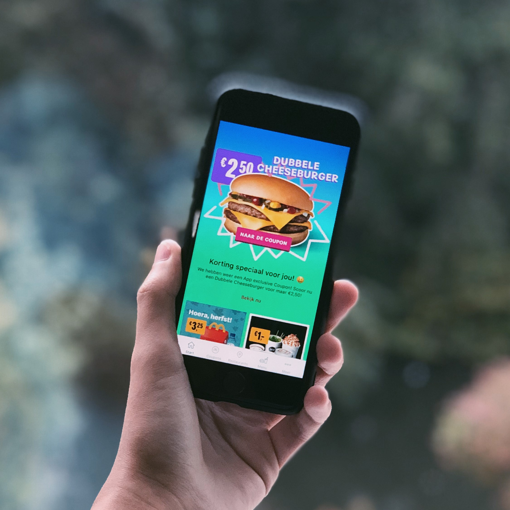

McDonald's
McDonald's is de grootste fast-food restaurant ter wereld.
Wij nemen onze verantwoordelijkheid over het milieu en
de afkomst van onze producten.
Over McDonald's
Het eerste McDonald's-restaurant werd geopend in 1940 door de broers Dick en Mac McDonald in San Bernardino, Californië. Het restaurant werd bekender nadat de broers een 'lopende-band'-productiesysteem ontwikkelden voor hamburgers, zonder beniening aan tafel in 1948. Een handelsreiziger en verkoper van milkshakemachines Ray Kroc kwam op het idee om meerdere zaken te openen. Zo ontstond het McDonald's-concern. Het eerste McDonald's-restaurant in Europa werd geopend in Zaandam in 1971. De eerste McDrive in Nederland werd gepoend op 25 september 1987 in Huis ter Heide.
McDonald's is tegenwoordig bekend als 's werelds grootste keten van hamburger- en fastfoodrestaurants. Bekende producten zijn onder andere de Big Mac en de friet. Ook is er voor kinderen een speciaal menu: de Happy Meal. In Nederland en België is de speciale gele frietsaus verkrijgbaar. In andere landen krijgt men standaard ketchup of mayonaise bij de frietjes geserveerd. De meeste restaurants hebben ook een McDrive. Hier kan je eten bestellen zonder je auto te hoeven verlaten, waarna de maaltijd/snack in de auto genuttigd kan worden. In Nederland zijn er 250 McDonald's-restaurants en 165 McDrives. Ongeveer 20.000 mederwerkers werken bij McDonald's in Nederland.
Ontbijten bij McDonald's
Bij McDonald's kun je tussen 07:00 en 11:00 's ochtends
genieten van een vers klaargemaakt ontbijt.
BEKIJK PRODUCTEN
McDonald's App
Onze app weet altijd de dichtsbijzijnde McDonald's te vinden, waar je ook bent. Ook kan je het menu bekijken vanuit de app en kan je na je maaltijd een review achter laten voor ons. Met de McDonald's App blijf je op de hoogte van winacties, games en de nieuwste producten. Ook zijn er wekelijks nieuwe coupons voor onze gebruikers, waarmee je kan genieten van korting op onze producten.

Locatie
Hier vind je de locaties van alle McDonald's restaurants in de buurt.